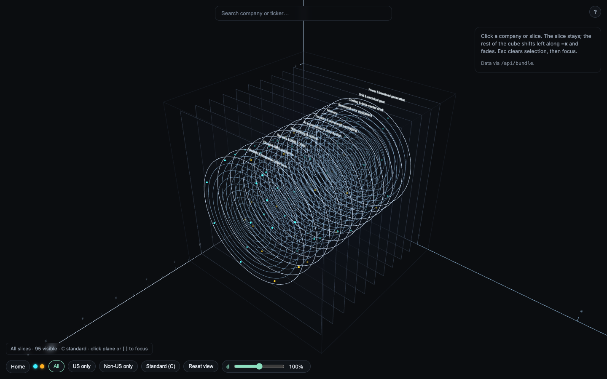

屏幕预览 · A4 纵向。打印：浏览器打开本页 → 打印 → 目的地「另存为 PDF」→ 边距「默认」→ 勾选「背景图形」→ 关闭「页眉和页脚」→ 保存。
Standard Financial Charting
标准金融制图
First Test
AI Industry Financial Risk
队长：隋宇博
队员：周晖
队员：徐国安
页码手填于 .toc-pg（以 PDF 页序计：封面为第 1 页、不印页码）。排版引擎支持 target-counter 时，给 html 加 data-toc="auto" 即自动生成。
CHAPTER
01
Project Overview
章首导语占位：用两到三句话交代本章回答什么问题、读完应得到什么判断。此处不放数据，数据在正文。
导语占位（.lede）：一两句话概括本节要点，字号略大、色略淡。
正文段落占位。此处为内阁整理后的正文，秘书只需套用本模板的段落样式：两端对齐、行距 1.75、段间距 0.75 行。English words and numbers like 2026 or 12.5% 与中文混排时保持基线对齐。1
三级标题下的正文占位。段落占位段落占位段落占位段落占位段落占位段落占位段落占位段落占位段落占位段落占位段落占位段落占位。
段落占位段落占位段落占位段落占位段落占位段落占位。
段落占位段落占位。
重点提示框（.callout）：一条需要评委记住的结论，置于段落之间，左侧墨色竖线，浅底。
| 项目 | 口径 | 2025 | 2026E | 变动 |
|---|---|---|---|---|
| 行项目一 | 口径占位 | 1,234.5 | 1,456.7 | +18.0% |
| 行项目二 | 口径占位 | 567.8 | 601.2 | +5.9% |
| 行项目三 | 口径占位 | 89.0 | 76.5 | −14.0% |
| 合计 | 1,891.3 | 2,134.4 | +12.9% | |
来源：数据来源占位（.src）。单位：亿元。

引文占位：一句值得单独成段的原话或原则，使用较大字号与细竖线。
出处占位，年份
时间线条目说明占位：实心方块表示已完成。
空心墨框方块表示当前阶段。
灰框方块表示计划中。
末项轨线自动收短。
警示提示框（.callout--warn）：墨色细框，用于风险、限制与前提。
说明提示框（.callout--note）：灰框，用于口径与阅读提示。
按首字母或拼音排序。首次出现处以脚注或括注给出，此表供集中查阅。
| 术语 | 英文 | 释义 |
|---|---|---|
| 术语占位一 | Term One | 释义占位：一到两句，说明口径与适用范围。 |
| 术语占位二 | Term Two | 释义占位。 |
| 术语占位三 | Term Three | 释义占位。 |
| 术语占位四 | Term Four | 释义占位。 |
数据、字体、图片与第三方材料的出处与使用条件。
| 编号 | 来源 | 提供方 | 许可 / 使用条件 | 用途 | 取得日期 |
|---|---|---|---|---|---|
| S1 | 来源名称占位 | 提供方占位 | 授权占位 | 用途占位 | 2026-00-00 |
| S2 | 来源名称占位 | 提供方占位 | 授权占位 | 用途占位 | 2026-00-00 |
| F1 | Jost Light 300（A–Z 子集） | Indestructible Type | SIL OFL 1.1，随仓附 OFL.txt | 字标全称、页眉页脚 | 2026-10-15 |
| F2 | PingFang SC · Songti SC · SF | Apple（系统字体） | 随系统，未再分发 | 中文正文与数字 | — |
编号规则：S＝数据与文献，F＝字体，G＝图片，T＝工具。